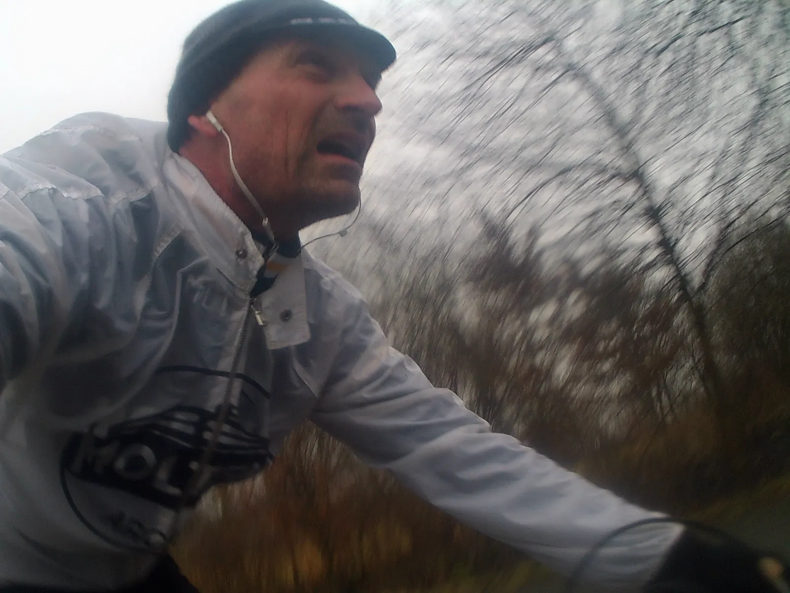
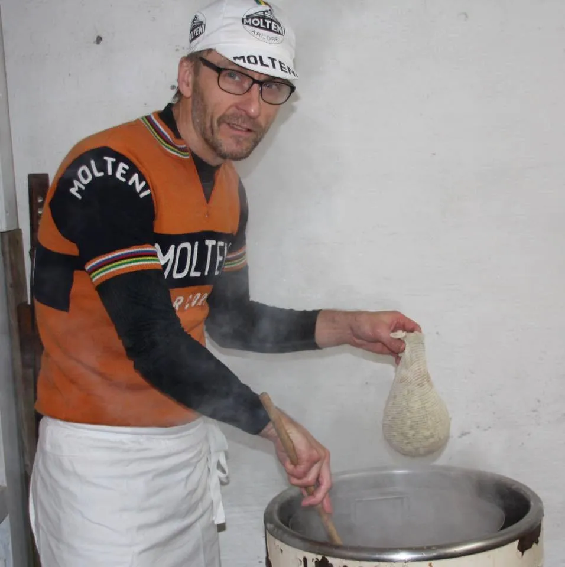

Retro Fondo rekognoscering i regn

Med kun to uger til sæsonstart er Squadra Molteni gået ind i de sidste afgørende forberedelser. Kaptajn Bjørnsteen har været på regnvejrs-rekonosering af Retro Fondo rundstrækningen – men også andre forberedelser er i gang på holdet.
Retro Fondo
Grand Fondo Jennum åbner ballet for det danske retro-cykelmiljø, med retrocykelløbet Retro Fondo. Der skal køres 3 omgange a ca. 20 km. Første omgang køres bag masterbil – og med godt 40 km til mål gives løbet frit.
Det er en barsk rute. Der ser umiddelbart ikke ud af så meget på de dersens højdeprofiler, men ude i virkeligheden, der bider den fra sig, fortæller Niels Bjørnsteen, det benyttede 2,5 timer søndag morgen til rekognoscering af ruten i silende regnvejr*.

Det er en meget afvekslende rute rundt om Fårup Sø. Der er kun 140 højdemeter pr. omgang, men de bakker der er, kommer i en lind strøm
Det er et typisk løb for Vejle-Ardennerne. Det går op og ned hele tiden. Og der er meget vigtigt også at kende ruten i regnvejr, fortæller Bjørnsteen på et vindblæst modvindsstykke inden en af de skrappe nedkørsler.
Kulsort Molteni-bryg og vægttræning
Det er ikke kun Kaptajn Bjørnsteen der er i fuld gang på Squadra Molteni. Grimpeur Eigil Leegaard har igen i år haft tid til at passe vintertræningen samtidig med, at han gået og kælet for en special kulsort Molteni-bryg, med nye hemmelige enzymer og vitaminer.

Supersprinter Grane Maaløe er også i gang med forberedeserne, selvom han først skal toppe noget senere på sæsonen.
Jeg har løftet Merckx-Colnago’en ned af krogen. Ja, faktisk løftede jeg den ned og op flere gange. Og det samme med min træningscykel. Men jeg ved godt, at jeg skal holde lidt igen med det dér vægttræning, fortæller Maaløe.
*
Rule #5 // Harden The Fuck Up.
Rule #9 // If you are out riding in bad weather, it means you are a badass. Period.